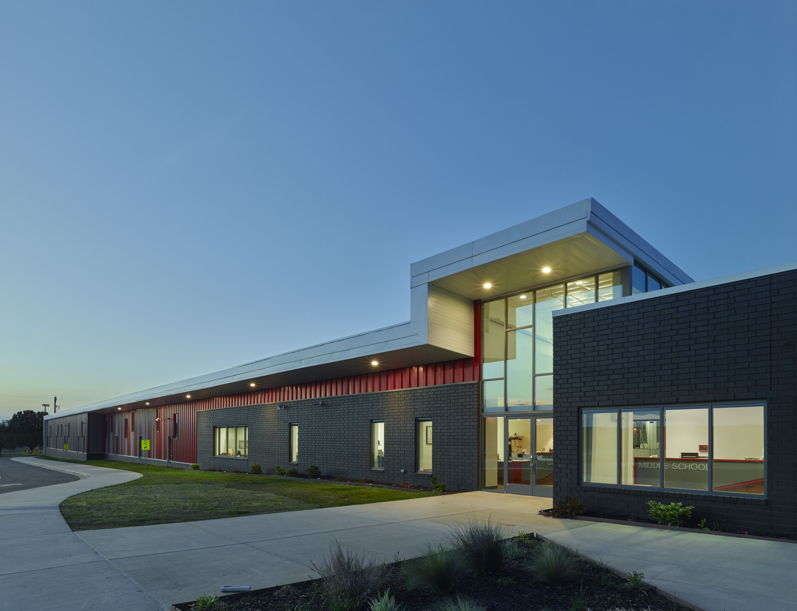
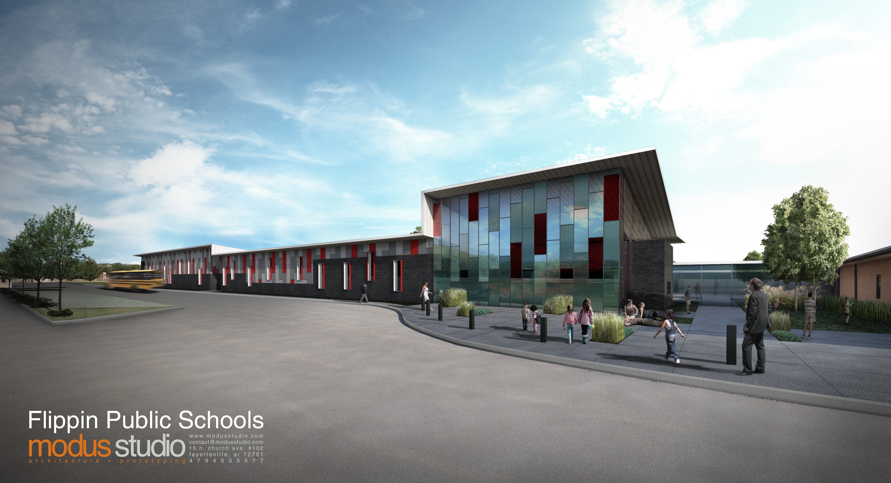
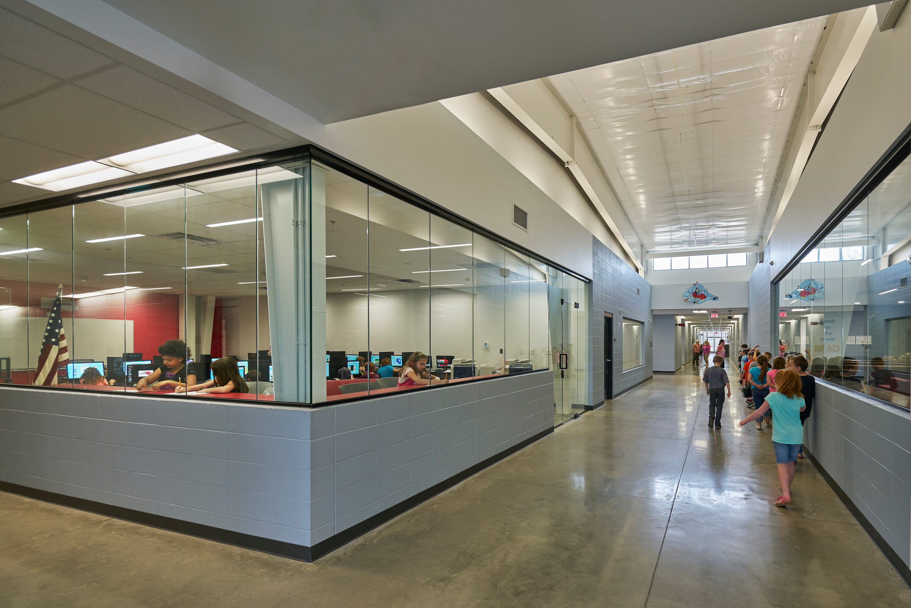
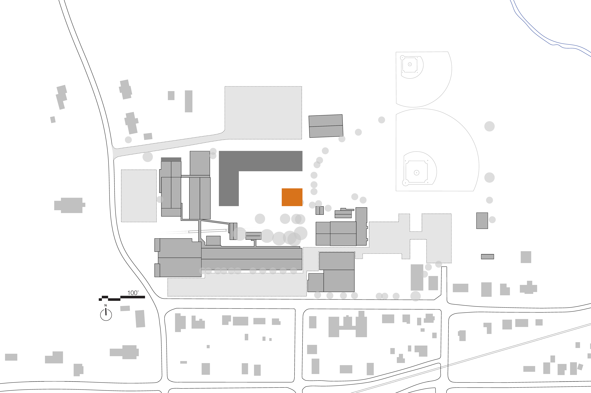
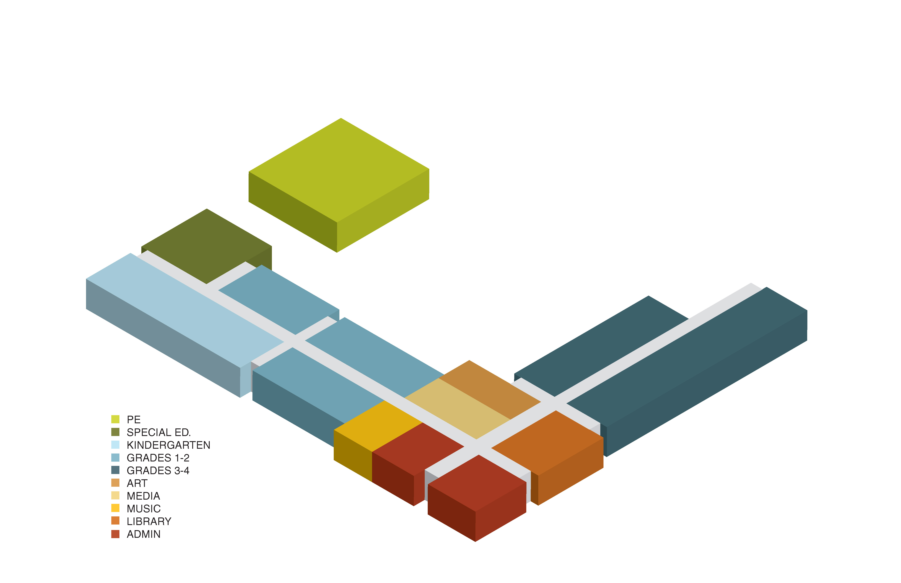

The Flippin School District's elementary campus had reached the end of its usable life. The existing buildings were aging, inefficient, and no longer adequate to support the programs and enrollment of a growing district. A community funding campaign was ratified in 2013, authorizing the district to replace the aging campus with a consolidated, purpose-built facility designed from the ground up to serve the next generation of students.

The new facility totals 48,000 square feet, housing all elementary grades on a single campus. A FEMA-rated storm shelter is integrated directly into the design, doubling as a physical education facility — a practical solution that gives the building genuine civic value beyond the school day. The project opened to students in 2017.
A school is also a shelter — designing for both at once is not a compromise but a clarification of purpose.


